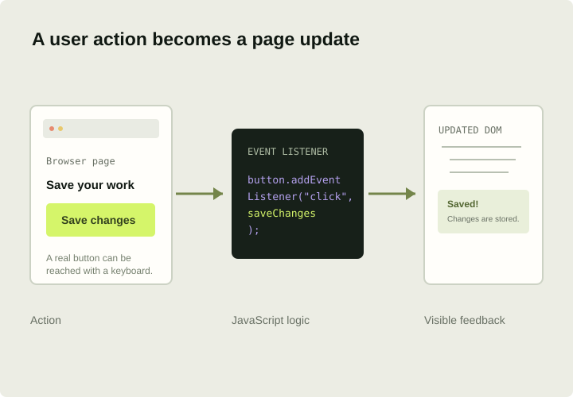

Values & variables
Store information with const and let. Work with strings, numbers, booleans, arrays, and objects to represent the state of a small feature.
const title = "Web Foundry";
let completedLessons = 0;THE WEB FOUNDATIONS SERIES Follow the learning path
03 / THE WEB FOUNDATIONS
BEHAVIOR & INTERACTION
JavaScript is the programming language that adds behavior to a web page. It can respond to a click, validate a form, update content, or help a person understand what changed on screen.
Explore the JavaScript topics
Interaction starts with a clear intention. Add JavaScript when it helps someone complete a task, understand a result, or control the interface.
THE THIRD LAYER / 003WHAT YOU'LL LEARN
Build a mental model of how JavaScript runs, how the browser exposes a page to code, and how to keep interactive features understandable.
Store information with const and let. Work with strings, numbers, booleans, arrays, and objects to represent the state of a small feature.
const title = "Web Foundry";
let completedLessons = 0;Use conditional logic to make decisions, and loops to process collections. Prefer clear, predictable control flow over clever shortcuts.
if (isComplete) {
showSuccessMessage();
}Give a task a name, accept the values it needs, and return a result. Focused functions make behavior easier to test and understand.
function greet(name) {
return `Hello, ${name}!`;
}Listen for actions such as clicks, form submissions, and keyboard input. Respond to the actual event without taking control away from the user.
button.addEventListener(
"click",
handleClick
);Find elements in the document and update their text, attributes, or state. The DOM is the browser's live representation of your HTML.
message.textContent =
"Your changes are saved.";Use real buttons and links, keep focus visible, announce important status updates, and make sure features work from a keyboard.
status.setAttribute(
"aria-live",
"polite"
);PUT IT INTO PRACTICE
Build a small interactive component such as a filter, menu, or completion checklist. Start with semantic HTML, then add only the behavior the feature needs.